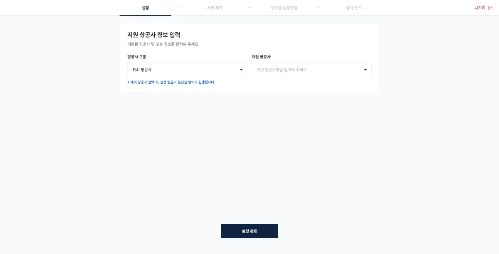
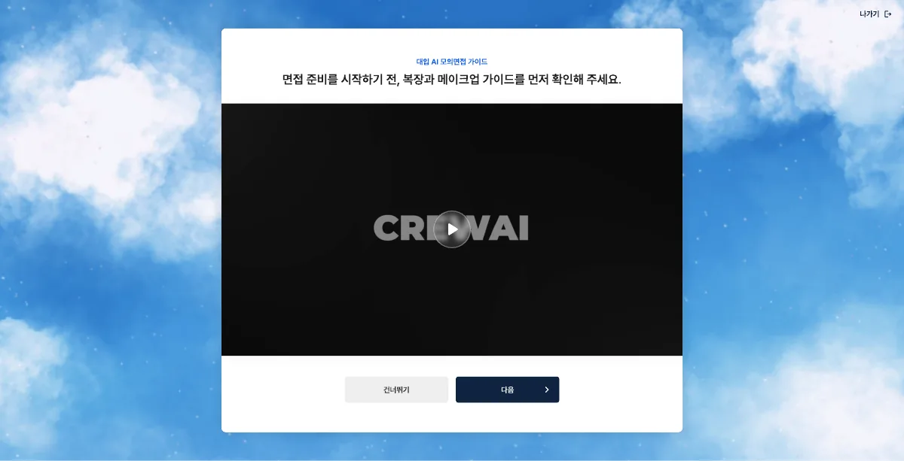
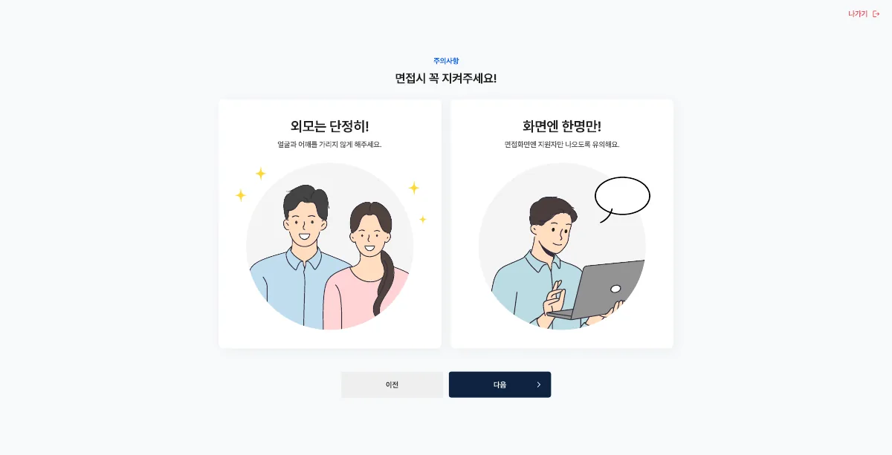
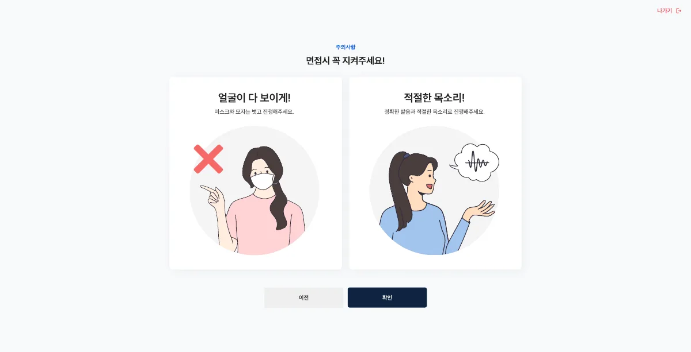

면접왕
AI가 예상질문을 만들고 모의면접 결과 리포트를 돌려주는 면접왕의 승무원·항공사 지망생 전용 버전입니다. 승무원학원에 납품하는 제품으로, 준비부터 결과 확인까지의 화면을 만들었습니다.

프로젝트 소개
원래 서비스는 대입 면접이 중심입니다. 생활기록부를 올리면 AI가 예상질문을 만들고, 모의면접 뒤에는 태도·음성·긴장도와 답변 내용을 분석한 리포트가 나옵니다.
저는 이 서비스를 승무원·항공사 지망생 전용으로 다시 만든 버전을 맡았습니다. 학원 수업에서 학생들이 반복해서 응시하고, 대부분 처음 준비하는 사람이라 무엇을 언제 해야 하는지 화면이 먼저 알려주도록 했습니다.
예상질문과 면접 구성
모의면접은 8문제, 네 단계입니다. 지원동기로 시작해 지원 학교·학과 질문, 개인 기록 기반 질문을 거쳐 하고 싶은 말로 마칩니다. 직접 등록한 질문으로 연습할 수도 있습니다.
승무원 버전은 설정 단계에서 국내·해외 항공사와 지원 항공사를 먼저 받아 질문을 구성합니다. 해외 항공사를 고르면 질문과 답변이 영어로 진행되므로, 선택 바로 아래에 그 안내를 뒀습니다.

면접 진행 화면
응시 전에 카메라와 마이크를 확인하는 단계가 있습니다. 여기서 못 걸러내면 8문제를 다 본 뒤에야 영상이 비어 있는 걸 알게 되므로, 건너뛸 수 없게 하고 무엇이 문제인지 그 자리에서 알려줍니다.
면접은 시간에 묶여 있습니다. 생각시간 30초 동안 질문을 확인하고, 답변시간 90초가 지나면 자동 제출됩니다. 넘어가는 조건이 여러 개라, 남은 시간과 지금 단계를 항상 같은 자리에 뒀습니다.
환경 체크 앞에는 안내 단계가 있습니다. 복장·메이크업 가이드 영상을 보여준 뒤, 얼굴과 어깨를 가리지 않기, 화면에 지원자만 나오기, 마스크·모자 벗기, 정확한 발음으로 답하기를 화면 하나에 하나씩 짚습니다. 응시 중에는 되돌릴 수 없는 조건이라 시작 전에 끊어 안내했습니다.



결과 리포트
리포트는 세 단계입니다. 종합점수·분포도·합격라인으로 전체 위치를 보여주고, 태도·음성·긴장도를 항목별로 나눈 뒤, 문항마다 강점과 약점을 짚습니다. PDF로도 받을 수 있습니다.
점수 하나로 끝내면 다음에 뭘 고칠지 남지 않아서, 위에서 아래로 갈수록 범위가 좁아지게 하고 각 단계에서 바로 다음 단계로 내려갈 수 있게 했습니다.
응시 이력
학원 수업에서는 한 학생이 같은 면접을 여러 번 봅니다. 그래서 응시한 면접을 모아 실력 추이를 보는 화면을 두고, 목록에서 바로 결과 리포트로 들어가 이전 면접과 비교할 수 있게 했습니다.
사용 기술
React 19와 TypeScript로 화면을 나누고 라우팅을 잡았습니다. 카메라·마이크 스트림 처리와 응시 중 상태 관리가 가장 손이 많이 갔고, AI 분석 결과는 받아서 리포트 화면에 붙였습니다.
돌아보며
면접은 되돌릴 수 없는 화면입니다. 시간이 지나면 답변이 자동 제출되고, 장치가 잘못돼 있으면 응시가 무효가 됩니다. 그래서 무엇을 언제 해야 하는지, 어디까지 왔는지를 화면이 계속 알려주는 데 가장 공을 들였습니다.